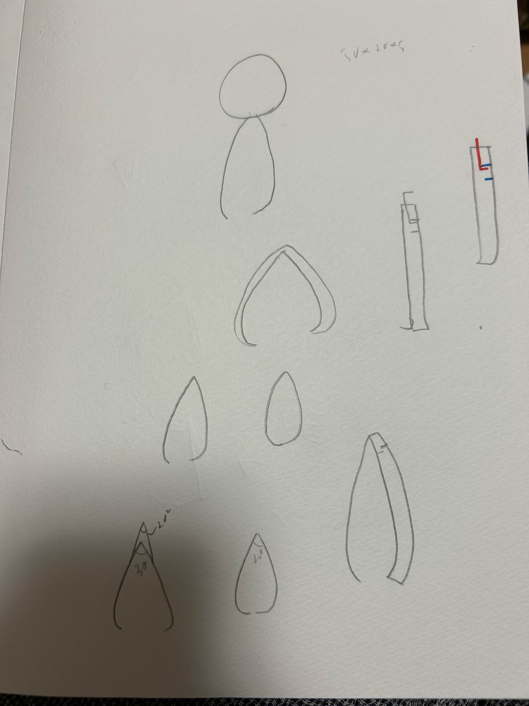
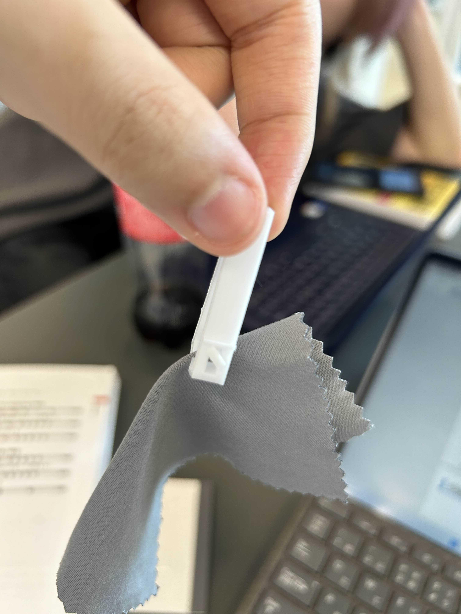

作品名：無力ピンセット
日ごろからピンセットを使うときに、力を入れることを煩わしく思っていた。
ので、割と初めから力を使わず楽に使える方針→閉じた状態で固定できるように考えていた(力を入れ続けるのは疲れるので)。
構想段階

初期案ではピンセットが閉じたときの角度を測定し、それと同じ角度のパーツで上から覆うことでピンセットを閉じた状態で固定できるように考えた。しかし、
①角度、長さの調整が難しい点②閉じた状態で固定するための取っ手(?)の構想が固まらなかったため、再考した。
初印刷
そもそも自分は3Dプリンターを使ったことがないので、ピンセットがどのように印刷されるのか想像できなかった。よって、とりあえず試作品を作って印刷することにした。
↓実際にできたものがこちら↓
初めてにしては悪くないと思うが、はさんだ時の物をつかむ部分に隙間ができているので、そこが課題である。
この試作品から発送を得て次なるスケッチを書くことにした。
ボルトとナットを使う方法や、ピンセット本体にくぼみをつくりそこに別パーツをはめ込む方法を思いついたが、どちらも指定されているサイズでは小さすぎて実現することが難しいと悟った。
完成
そして悩み、行き着いたスケッチがこちら
←(いま見返したら結構雑だった)
スケッチがわかりづらいので完成品で説明したいと思う

結果としては「本体」と「固定パーツ」の2つに分けた。
「ピンセット本体」で物を挟み、そこに「固定パーツ」を横の穴から挿し、回転させることでピンセットが開く力を出っ張りの部分で受け止め、閉じた状態で固定している。
↓これにより物を長時間つかむ際、指に力を入れ続ける必要がなくなった。↓

作品を実際に印刷して、一番満足した点は発想通りに動いたこと(折れたりしなかったこと)
次点で、初印刷時の課題であったつかむ部分の隙間を図と計算によって埋めることができた点である。
補足
↓作成したstlファイル
作成するにあたって主に参考にしたものは先輩たちが作ってくれた動画である。
あとは友人や家族との会話でピンセットについて話して、発想を得ることが多かったように思える。